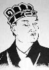

Keşifler tarihinde Cai Lun’un (62-121) adına nadiren rastlanılır. Ancak Antik Çin’de bir devlet görevlisi olan Lun’un mükemelleştirdiği kağıt, dünyayı tereddüte yer bırakmayacak bir şekilde değiştirmiştir.

Kağıttan önce eski yazılar kolaylıkla dağılabilen papirüslere ya da hayvan derisinden yapılan nadir ve pahalı bir ürün olan parşömenlere işleniyordu. Çok daha ucuz ve dayanıklı olan kağıt, geniş kapsamlı kayıtlar tutmayı ve kitapların ucuza mal edilmesini mümkün kıldı. Kağıt imalatı, aşama aşama dünyaya yayılmış, okuma yazmanın yaygınlaşmasını sağlayarak Avrupa’da Rönesans’ın gerçekleşmesine bile katkıda bulunmuştur.
Aslen Hunanlı olan Cai Lun, Han Hanedanı’nın İmparatoru He’nin (79-105) sarayında yaşayan bir harem ağasıydı (hadım edilmiş erkekler, çocuk sahibi olamayacakları için imparatorluk hizmetlerinde tercih ediliyorlardı. Bu özellikleri nedeniyle hükümeti devirip yeni bir hanedan başlatma ihtimallerinin çok daha az olduğu düşünülüyordu). 89 yılında Cai Lun silah ve çeşitli aletler üreten bir departmanın başına getirildi. Burada kısa süre içerisinde ucuz ve dayanıklı bir yazı materyaline ne kadar ihtiyaç duyulduğunun farkına vardı.
Uzun denemelerden sonra 105 yılında buluşunu imparatora açıkladı. Cai Lun’un kendisinden önce gelen kağıt imalatçılarından ve yerel geleneklerden çok faydalandığı tahmin edilmektedir. Ancak ne olursa olsun dünyanın dört bir yanına yayılan onun ürettiği kağıt modeli olmuştur.
Büyük takdir toplamasına rağmen popülerliği uzun süre devam etmedi. İmparator 105 yılında öldü. Yerine geçen yeğeni İmparator An (94-125) danışmanlarının çoğuyla düşman oldu. Tutuklanacağını anlayan Cai Lun 121 yılında intihar etti.
Ek Bilgiler
1- Han Hanedanı 220 senesine kadar devam etti. Çin kültürü üzerinde büyük bir etkisi oldu. Öyle ki “han” kelimesi halk anlamına gelen genel bir sözcüğe dönüştü.
2- Yaptığı buluş için Cai Lun’u onurlandırmak adına ona Lung-Thing Markisi unvanı verildi. “Kağıt yapımının koruyucu azizi” olarak kendisine Çin’de yüzyıllar boyunca büyük saygı gösterildi.
3- Çin İmparatorları Cai Lun’un ölümünden sonra kağıt yapımını bir sır olarak sakladılar. Bu sırrın 751 yılında, Çin kağıt imalatçılarının Araplar’la yapılan bir savaşta esir alınmalarıyla ortaya çıktığı söylenmektedir. Sırrı açığa vurmaları için zorlanmışlardı.